This page presents my (un)published works with the associated files and links, grouped by publications, accepted but not yet published papers, submitted papers, software developments, and drafts and short notes.
Quantum Bayesian networks provide a mathematical formalism to describe causal relations, to analyse correlations, and to predict the probabilities of measurement outcomes, in systems involving both classical and quantum data. They generalize Pearl’s Bayesian networks—prominent graphical models for classical probabilistic reasoning and inference.
The goal of this paper is to bring compositional principles and a typing discipline into this setting. A key feature of our compositional semantics is that when all causes are classical, it coincides with the standard factor-based semantics of Bayesian networks, while in the purely quantum case it reduces to tensor networks. We then propose a typed formalism based on linear logic proof-nets, where types ensure well-behaved composition of systems, and which we prove sound and complete with respect to quantum Bayesian networks.
Quantum Bayesian networks provide a mathematical formalism to describe causal relations, to analyse correlations, and to predict the probabilities of measurement outcomes, in systems involving both classical and quantum data. They generalize Pearl’s Bayesian networks—prominent graphical models for classical probabilistic reasoning and inference.
This extended abstract reports on work which brings compositional principles and a typing discipline into this setting. A key feature of our compositional semantics is that when all causes are classical, it coincides with the standard factor-based semantics of Bayesian networks, while in the purely quantum case it reduces to tensor networks. We then propose a typed formalism based on proof-nets from linear logic, where types ensure well-behaved composition of systems, and which we prove sound and complete with respect to quantum Bayesian networks.
Quantum Bayesian networks provide a mathematical formalism to describe causal relations, to analyse correlations, and to predict the probabilities of measurement outcomes, in systems involving
both classical and quantum data. They generalize Pearl’s Bayesian networks—prominent graphical models for classical probabilistic reasoning and inference.
This extended abstract reports on work which brings compositional principles and a typing discipline into this setting. A key feature of our compositional semantics is that when all causes are classical, it coincides with the standard factor-based semantics of Bayesian networks, while in the purely quantum case it reduces to tensor networks. We then propose a typed formalism based on linear logic proof-nets, where types ensure well-behaved composition of systems.
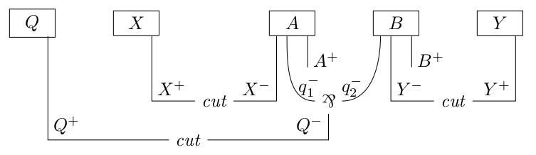
Proofs in a logic are usually considered (at least) up to cut-elimination. This is the case in linear logic, that also has another equivalence relation on proofs: rule commutation. We prove these two notions coincide in second-order linear logic and many of its fragments. Moreover, we show that equality up to rule commutation is undecidable in propositional linear logic—and so is equality up to cut-elimination.
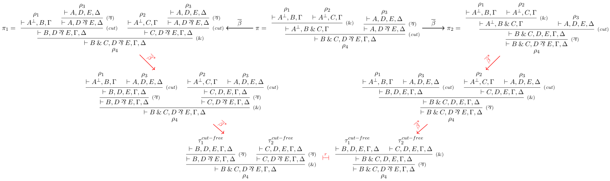
We characterize type isomorphisms in the multiplicative-additive fragment of linear logic (MALL), and thus in *-autonomous categories with finite products, extending a result for the multiplicative fragment by Balat and Di Cosmo. This yields a much richer equational theory involving distributivity and cancellation laws. The unit-free case is obtained by relying on the proof-net syntax introduced by Hughes and Van Glabbeek. We use the sequent calculus to extend our results to full MALL, including all units, thanks to a study of cut-elimination and rule commutations.
We characterize type isomorphisms in the multiplicative-additive fragment of linear logic (MALL), and thus for *-autonomous categories with finite products, extending a result for the multiplicative fragment by Balat and Di Cosmo. This yields a much richer equational theory involving distributivity and annihilation laws. The unit-free case is given by relying on the proof-net syntax introduced by Hughes and Van Glabbeek. We then use the sequent calculus to extend our results to full MALL (including all units).
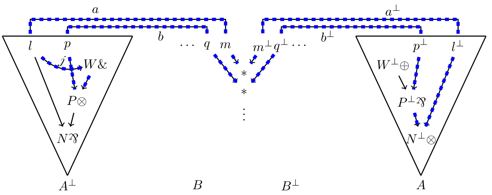
We present an implementation of proof-nets for unit-free multiplicative linear logic in the proof assistant Rocq. It contains a definition of proof-structures and proof-nets, a proof of the sequentialization theorem as well as a definition of cut-elimination.
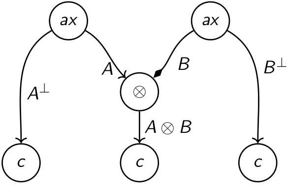
We revisit sequentialization proofs associated with the Danos-Regnier correctness criterion in the theory of proof nets of linear logic. Our approach relies on a generalization of Yeo's theorem for graphs, based on colorings of half-edges. This happens to be the appropriate level of abstraction to extract sequentiality information from a proof net without modifying its graph structure. We thus obtain different ways of recovering a sequent calculus derivation from a proof net inductively, by relying on a splitting par-vertex, on a splitting tensor-vertex, on a splitting terminal vertex, etc.
The proof of our Yeo-style theorem relies on a key lemma that we call cusp minimization. Given a coloring of half-edges, a cusp in a path is a vertex whose adjacent half-edges in the path have the same color. And, given a cycle with at least one cusp and subject to suitable hypotheses, cusp minimization constructs a cycle with strictly less cusps. In the absence of cusp-free cycles, cusp minimization is then enough to ensure the existence of a splitting vertex, i.e. a vertex that is a cusp of any cycle it belongs to. Our theorem subsumes several graph-theoretical results, including some known to be equivalent to Yeo's theorem. The novelty is that they can be derived in a straightforward way, just by defining a dedicated coloring, again without any modification of the underlying graph structure (vertices and edges) - similar results from the literature required more involved encodings.
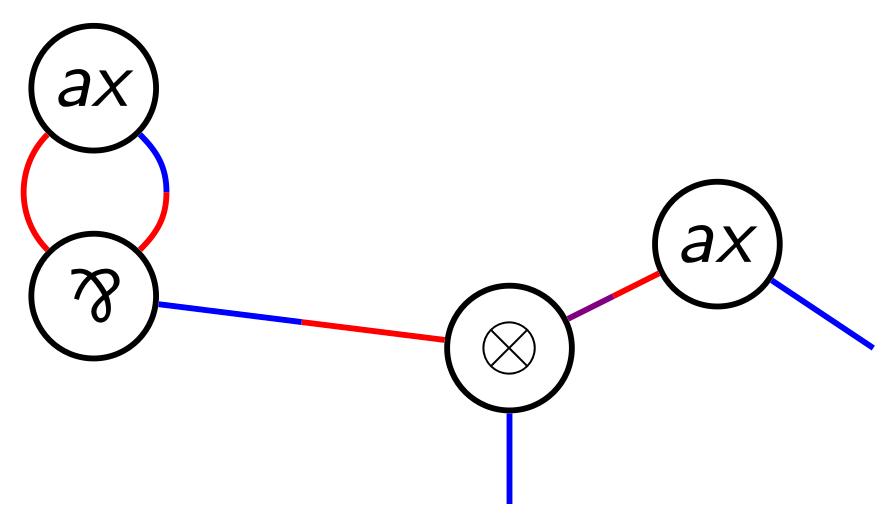
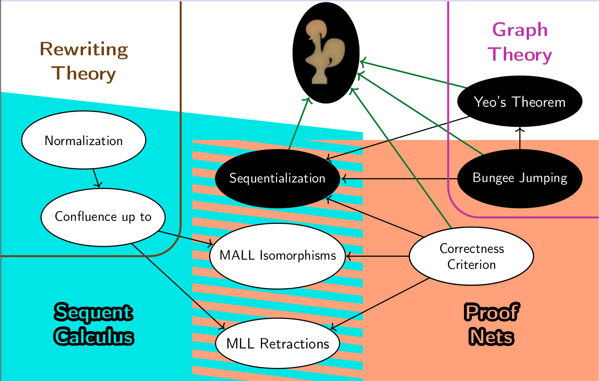
We propose a new proof of sequentialization for the proof nets of unit-free multiplicative linear logic with mix. It is based on the search of a splitting par by means of a simple new lemma about proof structures: the bungee jumping lemma.
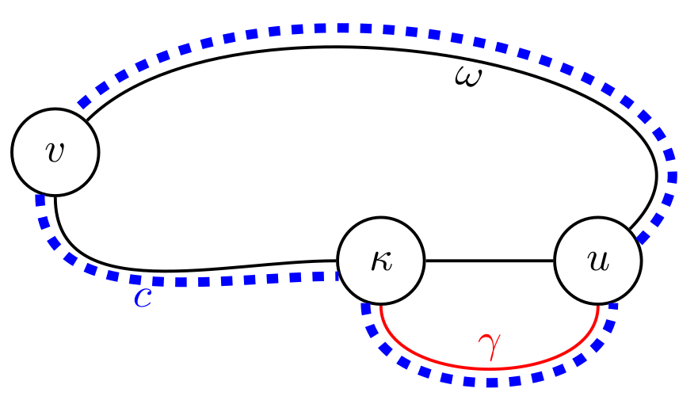
We propose a new proof of sequentialization for the proof nets of unit-free multiplicative-additive linear logic of Hughes & Van Glabbeek. This is done by adapting a method from unit-free multiplicative linear logic, showing the robustness of this approach.
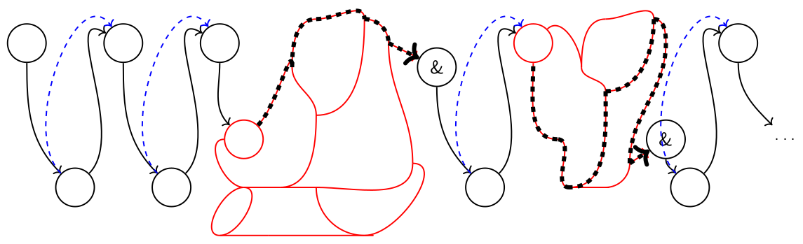
The literature on uniform interpolation in linear logic is very scarce: the sole known result is that the multiplicative-additive fragment of linear logic has the uniform interpolation property, and so do its intuitionistic and affine variants. We exhibit a simple formula of the unit-free multiplicative-exponential fragment of linear logic that cannot have any uniform interpolant in propositional linear logic. This example shows not only that propositional linear logic does not have the uniform interpolation property, but also that its intuitionistic and affine variants neither do. Furthermore, building on this example, we show the undecidability of the following problem in both classical and intuitionistic linear logic: given a formula, does it have a uniform interpolant?
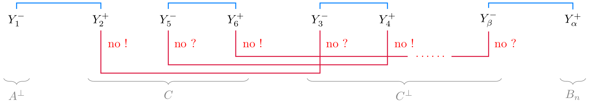
This paper shows that every idempotent splits in multiplicative linear logic (with and without the mix-rules): every idempotent can be written as a section composed with a retraction. Categorically speaking, the free ⋆-autonomous category is idempotent complete. Interestingly, this decomposition can be directly obtained by applying on the given idempotent an algorithm for proof-relevant interpolation.
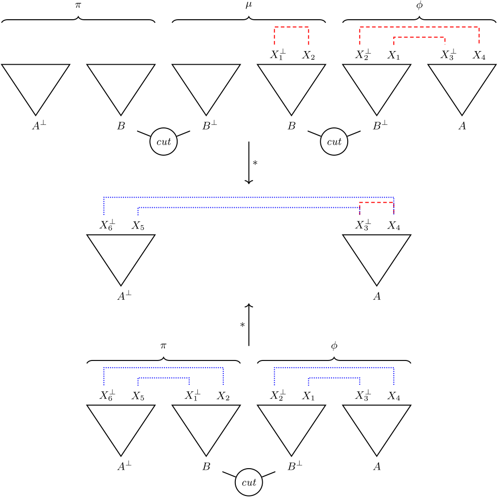
We study the correspondence between Bayesian Networks and graphical representation of proofs in linear logic. The goal of this paper is threefold: to develop a proof-theoretical account of Bayesian inference (in the spirit of the Curry-Howard correspondence between proofs and programs), to provide compositional graphical methods, and to take into account computational efficiency.
We exploit the fact that the decomposition of a graph is more flexible than that of a proof-tree, or of a type-derivation, even if compositionality becomes more challenging.
We revisit sequentialization proofs associated with the Danos-Regnier correctness criterion in the theory of proof nets of linear logic. Our approach relies on a generalization of Yeo's theorem for graphs, based on colorings of half-edges. This happens to be the appropriate level of abstraction to extract sequentiality information from a proof net without modifying its graph structure. We thus obtain different ways of recovering a sequent calculus derivation from a proof net inductively, by relying on a splitting vertex, which we can impose to be a par-vertex, or a terminal vertex, or a non-axiom vertex, etc., in a modular way. This approach applies in presence of the mix-rules as well as for proof nets of unit-free multiplicative-additive linear logic (through an appropriate further generalization of Yeo's theorem).
The proof of our Yeo-style theorem relies on a key lemma that we call cusp minimization. Given a coloring of half-edges, a cusp in a path is a vertex whose adjacent half-edges in the path have the same color. And, given a cycle with at least one cusp and subject to suitable hypotheses, cusp minimization constructs a cycle with strictly less cusps. In the absence of cusp-free cycles, cusp minimization is then enough to ensure the existence of a splitting vertex, i.e. a vertex that is a cusp of any cycle it belongs to. Our theorem subsumes several graph-theoretical results, including some known to be equivalent to Yeo's theorem. The novelty is that they can be derived in a straightforward way, just by defining a dedicated coloring, again without any modification of the underlying graph structure (vertices and edges) - similar results from the literature required more involved encodings.
Proofs in a given logical system are usually considered (at least) up to cut-elimination. This is the case in linear logic, that additionally has another equivalence relation on proofs: rule commutation, which identifies proofs equal up to an irrelevant ordering of their rules. We prove these two notions coincide: two cut-free proofs are equal up to cut-elimination if and only if they are equal up to rule commutation. Our proof is modular enough to apply in many fragments of second-order linear logic, as well as in presence of axiom-expansion. Furthermore, we show that, in propositional linear logic, knowing whether two given proofs are equal up to rule commutations, or not, is undecidable—which entails that equality up to cut-elimination is undecidable.
In the definition of a cut-elimination procedure, there often is a cut-cut commutation allowing to swap two cut-rules. This allows for instance to fully eliminate a chosen cut-rule without reducing other such rules in a proof. One may wonder whether such cut-cut steps are superfluous. We prove it is not the case in linear logic: some cut-free forms of a proof can only be reached using a cut-cut commutation.
(Improved thanks to comments by Olivier Laurent.)
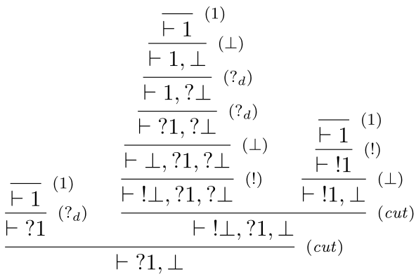